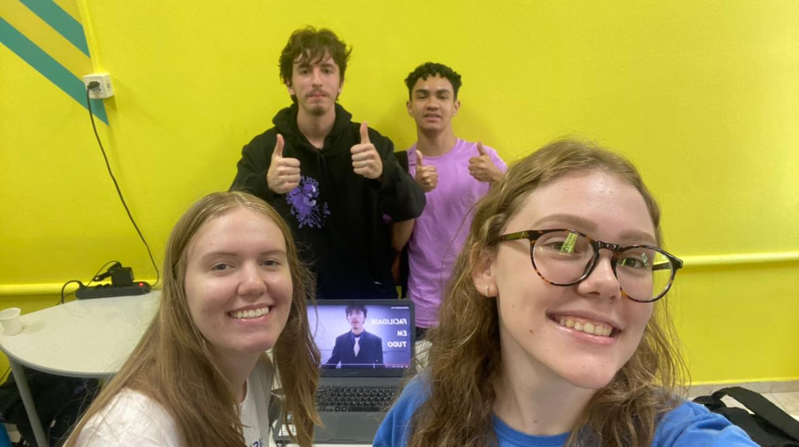

Conteúdo de Desenvolvimento
1 - Planilha Funcionais e Não
2 - Diário de Bordo
Dia 23/03/23 a 30/03/23
Mudança de projetos
Novo projeto: Gestão de tinturaria
Lucas: Tinkercad arduino.
Arthur: Preenchimento de documentação, diagramas de processo
Gabriel Labes: Preenchimento de documentação, diagramas de uso
Jefferson: Estudo de Apex Oracle e verificação da ideia.
Volta dos projetos - Agora
Arthur: Finalização de Requisitos Funcionais, Não-Funcionais e Regras de negócio.
Criação do diagrama de caso e uso;
Criação do diagrama de classes;
Criação das regras de negócio;
Criação dos requisitos funcionais e não funcionais;
Término do código em árduino;
Melhor elaboração da logo;
Vídeo de apresentação Mundo Senai;
80% de preenchimento do documento do projeto;
Criação de um Trello;
Criação do site em Apex;
3 - Projeto Atual
4 - Feira
Foi muito interessante a feira por parte da área de Desenvolvimento de Sistemas, tive a oportunidade de ver a apresentação de demais grupos da minha turma de da outra, e descobrir e entender exatamente o que cada equipe estava fazendo
